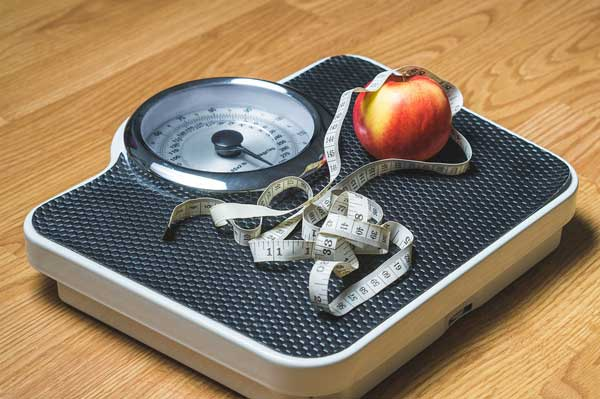
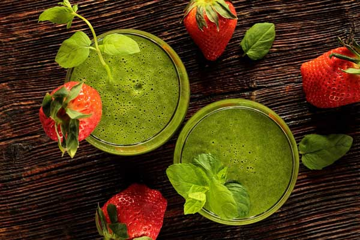

The secret to healthy weight loss
Weight loss occurs when the body is expending more energy in work and metabolism than it is absorbing from food or other nutrients. It will then use stored reserves from fat or muscle, gradually leading to weight loss. Being underweight is associated with health risks such as difficulty fighting off infection, osteoporosis, decreased muscle strength, trouble regulating body temperature and even increased risk of death.
Low-calorie diets are also referred to as balanced percentage diets. Due to their minimal detrimental effects, these types of diets are most commonly recommended by nutritionists. In addition to restricting calorie intake, a balanced diet also regulates macronutrient consumption. From the total number of allotted daily calories, it is recommended that 55% should come from carbohydrates, 15% from protein, and 30% from fats with no more than 10% of total fat coming from saturated forms.
For instance, a recommended 1,200 calorie diet would supply about 660 calories from carbohydrates, 180 from protein, and 360 from fat. After reaching the desired body weight, the calories consumed per day may be increased gradually, without exceeding 2,000 net (i.e. derived by subtracting calories burned by physical activity from calories consumed). Combined with increased physical activity, low-calorie diets are thought to be most effective long-term, unlike crash diets, which can achieve short-term results, at best. Physical activity could greatly enhance the efficiency of a diet. The healthiest weight loss regimen, therefore, is one that consists of a balanced diet and moderate physical activity.
Weight Management
Weight management is a long-term approach to a healthy lifestyle. It includes a balance of healthy eating and physical exercise to equate energy expenditure and energy intake. Developing healthy eating habits while using tips that will keep us fuller longer can be useful tools in weight management. Knowing what your body needs is important to weight management and can control overconsumption and underconsumption of food.
Weight management does not include fad diets that promote quick, temporary weight loss. It focuses on the long-term results that are achieved through slow weight loss, followed by retention of an ideal body weight for age, sex and height.
Rising obesity rates are a major concern in North America. About 60% of Canadians are overweight or obese. Obesity is a risk factor for many chronic diseases such as Type 2 diabetes, hypertension and cardiovascular disease. Managing one’s weight is one factor in preventing such chronic diseases.
Methods of Weight Management
Increase protein intake
The satiating property of dietary protein is influenced by the time of protein consumption. Studies have shown that protein intake at breakfast has a greater satiety effect than later meal times. Firstly, protein has a greater thermogenic effect than carbohydrates and fat, which enables the body to burn more calories. Secondly, a high protein breakfast appears to slow gastric emptying, which attributes to the fact that protein appears to be the most satiating macronutrient. Finally, a high protein breakfast increases the activity of glucagon, which activates the pathways for glucose synthesis.
Use a smaller plate
Using smaller plates helps to consume smaller portion sizes and this leads to the consumption of fewer calories. Studies have shown that portion size influences energy intake. People who are presented with larger portions do not report to have a higher level of satiety, which suggests that hunger and satiety signals are ignored when a large portion of food is placed in front of them.
Eat more soup
Soups have a significant satiety effect. Studies have demonstrated that compared to solid foods, soup ingestion decreases the amount of energy intake. Compared to having no soup, it has been shown that eating soup reduces total energy intake of a meal. When soup is consumed before a meal, a decrease of 20% of energy is consumed in the meal.
Choose low-calorie foods
A moderate decrease in caloric intake will lead to a slow weight loss, which may be more beneficial for long term weight management. For example, choosing a black coffee instead of a full fat latte will save calories that will add up in the long run. Low fat meats reduce the total amount of calories and cholesterol consumed. For example, traditional beef patties have 19.2% fat and 272 kcal per 100 g of meat. On the other hand, lean beef patties have 9.8%fat and 196 kcal.
Eating more dairy can aid in fat loss
Studies have shown that a diet high in dairy decreases total body fat. This occurs because a high amount of dietary calcium increases the amount of energy and fat excreted from the body. Studies have shown that saturated, monounsaturated and polyunsaturated fats all have a higher excretion rate with a high calcium intake. In these studies, a high calcium intake is considered 2300 mg and a low calcium intake is considered 700 mg. A possible explanation to this phenomenon is that high intakes of calcium cause calcium soap formation and/ or binding of bile acids in the intestine. Other studies specifically show that dairy sources of calcium demonstrate greater weight loss than supplemental calcium intake. This may be due to the other bioactive components present in milk, which may aid in metabolic efficiency and fat loss.
Incorporate more vegetables into your meals
Fruits and vegetables have been shown to increase satiety and decrease hunger. These foods have a low energy density, which is mainly due to the high water content and partly due to the fiber content. The reduction of energy density has been shown to enhance satiety. The water adds weight, without adding calories and the fiber slows gastric emptying. Both of these factors contribute to the satiating effect of vegetables and fruits. Studies have also shown that fiber decreases hunger and also decreases total energy intake.